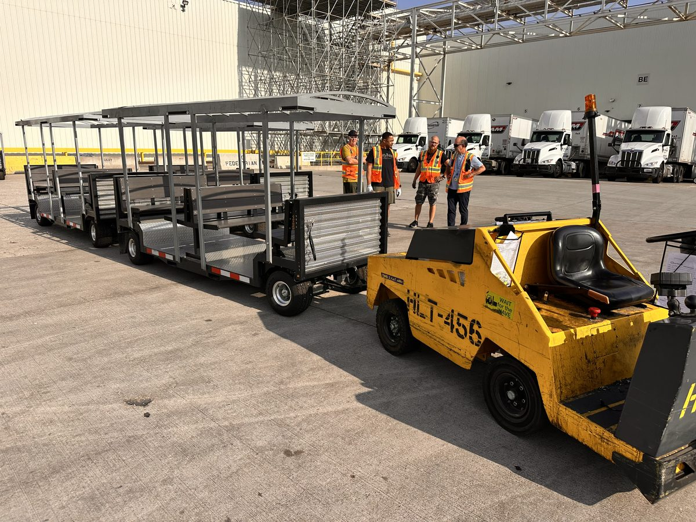

Warehouse & logistics
Move your workforce.
Not your budget.
Large distribution centers lose thousands of labor hours per year to workers walking between parking, break areas, and their stations. FlexTram runs a fixed-loop shuttle — one driver, up to 27 workers per trip — cutting walk time and vehicle clutter on the floor.
The problem
What shift changes
are really costing you
The solution
One fixed loop. One driver.
Workers to their stations faster.
FlexTram is a warehouse people mover designed for the demands of large distribution centers and logistics facilities. A single compact tram runs a fixed loop between parking, break areas, loading docks, and work stations — carrying up to 27 workers with one driver.
Where you had dozens of golf carts and personal vehicles cluttering the floor, one FlexTram replaces them all on a predictable route. Workers know when and where to board. The floor stays clear. Safety incidents from vehicle-pedestrian conflicts drop significantly.
FlexTram is compact and agile — safe for indoor warehouse aisles and loading areas. It scales for shift-change surges and stores compactly during off-hours. Operators report measurable reductions in walk time and improvements in shift-change throughput.
Driver labor — FlexTram vs. alternatives
One FlexTram
27 passenger capacity
1 driver required
Five 6-seat golf carts
25 passenger capacity
5 drivers required
Two sprinter vans
28 passenger capacity
2 drivers required
Labor only. Excludes benefits, fuel, maintenance, and insurance. Golf cart drivers ~$31k/yr · Sprinter van drivers ~$38k/yr · FlexTram operator ~$31k/yr.
Specifications
Where we operate
Common questions
Can FlexTram operate inside a warehouse?
Yes. FlexTram is compact and agile with — safe for indoor warehouse, distribution center, and cold storage environments. One tram on a fixed route replaces multiple golf carts on the floor.
How does FlexTram improve shift change efficiency?
FlexTram runs a fixed loop between parking and work stations, carrying 27 workers per trip. Workers board on a predictable schedule instead of walking 10-15 minutes. The result: faster transitions and measurably more productive time per shift.
Does FlexTram reduce safety incidents on the warehouse floor?
One FlexTram on a predictable route replaces dozens of golf carts weaving through the floor. Fewer vehicles in pedestrian areas means fewer vehicle-pedestrian conflicts and lower OSHA exposure.
Can FlexTram handle both indoor and outdoor routes?
Yes. FlexTram transitions seamlessly between indoor warehouse floors and outdoor parking lots, loading docks, and break areas. One vehicle covers the full route.
What's the ROI on FlexTram for a distribution center?
ROI comes from three areas: recovered walk time (measurable labor hours), reduced vehicle fleet (fewer carts, lower insurance), and fewer safety incidents. Most DCs see payback within 6-12 months.
Related reading


Ready to streamline your operation? Let's talk.
Tell us about your facility — square footage, headcount, shift schedule — and we'll show you how FlexTram can reduce walk time, cut fleet costs, and improve safety.
Other industries
Get in Touch →